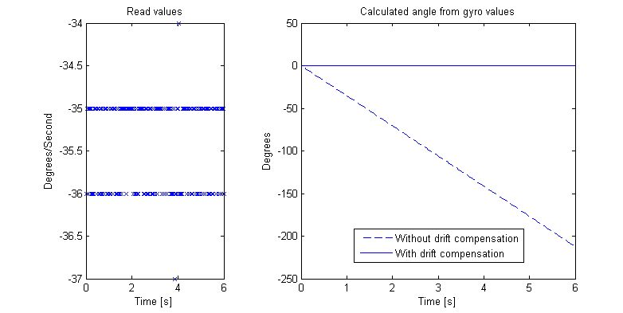
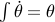
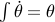
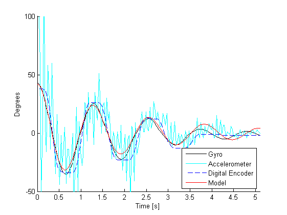

In a controlled system there are three things acting; sensors, a control computer and actuators. Sensors are in the system to mesure what is happening at the moment, example is a sensor mesuring speed. The control computer calculates the desired control signal based on the input from the sensors. Last in the system is the actuators to act out the calculated control signal, exampel is a motor acting on a calculated voltage. In our case the mindstorm unit is the control computer, the motors are the actuators and the various sensors equals the sensors.
Sensors
In the pendulum system what needs to be mesured is two things; the angle and the rate of change in the angle, . The rate of change in the angle , ,will be mesured with a gyro sensor, for the angle we could use a accelerometer or use the integration of the gyro.
Gyro sensor
A gyro sensor gives the rate of rotation . Here we are also using a HiTechnic Gyro Sensor which can give the rotation of up to  degrees per second.
degrees per second.
A problem with gyro sensors is that they have a little bit of drift, i.e. the gyro always shows a value even if it is stationary. This means that to give a proper reading of the values the gyro has to be calibrated. A common (and very simple) way of doing this is compensating the error by just subtracting this error from the value. The error can be mesured by keeping the gyro stable for a couple of seconds and taking the average value. See below for the raw values, integration of these and the drift when not taken care of.

Accelerometer/Tilt sensor
The accelerometer sensor from HiTechnic can show both the acceleration (degrees per second,  ). The tilt is calculated by looking at how much the value of the gravitational force differs from the force in one direction. This method has a problem - as seen below the signal is very noisy and either has to be heavily filtrated or some other means of acquiring the angle has to be used. We choose to take the integration of the gyro which gives us .
). The tilt is calculated by looking at how much the value of the gravitational force differs from the force in one direction. This method has a problem - as seen below the signal is very noisy and either has to be heavily filtrated or some other means of acquiring the angle has to be used. We choose to take the integration of the gyro which gives us .

Uncertanties in sensors
No method of acquiring data is perfect. Below is the mesurment of the angle of a pendulum. It shows three different ways of mesuring the angle, each with its own problem. The digital encoder is mesuring the angle from the base point. Since the pendulum in this case is not completely stiff, the mesurments get strange each time it changes direction. It is also not possible to use this when creating a inverted pendulum.
The problem with the gyro is that since the angle is created with and integration, it might not react to fast changes as quickly as the other sensors. But the positive side is that the curve is without noise.
As for the accelerometer the problems can clearlt be seen since the signal is very noisy. The reaction time of it is very fast though.

Actuators/Motors
Used to control the systems are the supplied motors that comes with the mindstorm unit. They have an input range of which is mesured as percent of maximum power. This power is assumed to be proportional to the torque by some unknown constant. Since there is no model for the motor the power from the motor will be guessed with an trial and error method.
Encoders
The motors also have built in encoders that give a digital value of the angle of the motors, so the motors can be used to give information about the position of the base of the pendulum. This is important if we want the pendulum to stay in one position or keep a certain velocity which we will see later.
Programing Lego Mindstorm
Now that we know how what information we need we can start by looking at how to acquire it and how to use it. We want a way to process the information given by the sensors, calculate the desired output and aply it to the motors. Fortunatly Lego provides this functionality (and a lot more) in it Mindstorm unit.
The Mindstorm block can be programmed in a few completely different ways - from using the built in tool on the block, to using a low level language very similar to assembler. What will be used in this exampel is the programming language Not eXactly C (NXC). It is a language that is fast but still intuitive to people with only a small experience in programming. It is based on C with the addition of some extra commands to interface with the mindstorm unit. Assumed is basic programming skills.
Not eXactly C
There is a lot of resourses online covering exactly how to program C and NXC so there is no use trying to explain what other already have done better. Below is a list of resources that will be helpful when programming.
Bricx Command Center
To be able to program in NXC you need a compiler. The easiest one to use is Bricx Command Center which also includes a GUI and debugger. See BricxCC for download and guides. When you have familiarized yourself with NXC and set up so that NXC is owrking on you Mindstorm unit, move on to the next section.